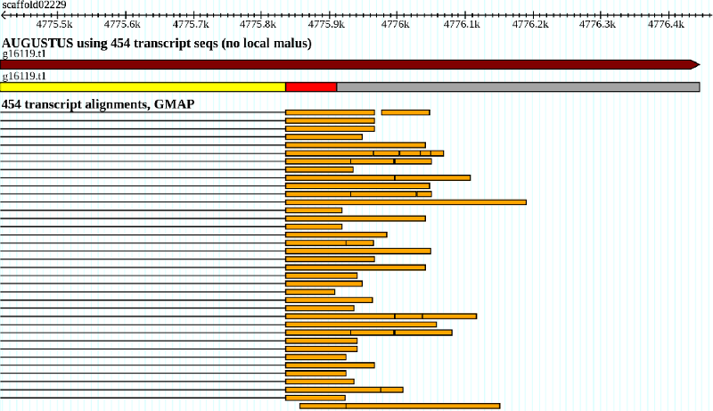

This document describes a method for structurally annotating a genome based on massive cDNA sequencing (RNA-Seq). The guide below is a description of the method we developed for and applied in the RNA-Seq based Genome Annotation Assessment Project (rGASP). It was applied to a variety of data types, such as from Illumina and SOLiD, for read lengths between 33bp and 75bp, single and paired-end reads, stranded and unstranded reads, on human, Drosophila and C.elegans. We therefore expect this to be generally applicable to other projects with some parameter adjustments. The general approach is to generate hints for Augustus from the RNA-Seq, which can be used together with hints from other sources if available (like from an existing gene models, ESTs, protein or genomic conservation, MS/MS). The approach outlined below is preliminary, and certainly can be improved upon, e.g. by adding more information from the RNA-Seq in the form of hints. Also, it is just one way to translate RNA-Seq information to gene structure hints and you can adjust it for your processed data if you have already a mapping or assembly of reads. For example, if you choose to first assemble RNA-Seq reads to contigs, you may just just treat them as other larger transcript fragments such as ESTs and use BLAT/GMAP+blat2hints.pl to generate the hints.
1. Align RNA-Seq Reads to Genome
For species with many multi-exon genes (most species), we found that spliced reads are by far most valuable. Spliced reads are reads that span an exon-exon boundary and therefore delineate a complete intron. It is therefore important to chose an alignment method that recovers as many true spliced reads as possible.
1.1 Illumina:
In lack of a better program, we chose to use the program BLAT, which is not customized for NGS reads (Next Generation Sequencing), but found more introns than Tophat 1.0.11. However, it is straightforward to adjust this pipeline to Bowtie/Tophat input, because Tophat produces results in the same or similar format (wig file and intron list including multiplicities).
blat -noHead -stepSize=5 -minIdentity=93 genome.masked.fa rnaseq.fa ali.psl
Then filter alignments for alignment quality, uniqueness and pairedness, if applicable.
cat ali.psl | filterPSL.pl --uniq --paired > ali.f.psl
This filter requires by default a minimum coverage of 80% of the read length and a minimum percent identity of 92%.
--uniq makes the filter script keep only alignments, which are 1) the best alignment for that read and 2) unique in the sense that all other alignments of that read have a score that is at most 0.96 (uniquethresh) the score of the best. The rationale behind stringent filtering is that self-similarity of the genome or of transcripts in particular may otherwise yield many false positive alignments. False positive alignments can be a greater problem to Augustus as false negative alignments, the later may frequently be corrected by the ab initio model aided by neighboring alignments.
--paired is another filter that only applies to paired-end reads. It requires that two reads from the same read-pair (when the read names end in .f,.r or /1,/2) are on opposite strands, on the same genomic contig and at most maxintronlen (default: 500000) apart from each other.
For single-end reads just run
cat ali.psl | filterPSL.pl --uniq > ali.f.psl
Repeatmasking alone usually does not filter out repetitions of DNA to the extend that RNA-Seq read mapping become unambiguous or false positive. From our experience it can happen that even with the stringent --unique filtering reads map to a likely wrong place in the genome. This is frequently a region that is not a gene but shows high genomic similarity to another region with a gene. You may therefore consider increasing the stringency of the filtering by removing hits from regions that are repeated similarly in the genome (and are not repeatmasked nonetheless). We chose to remove hints that overlap a self-chain alignment of the UCSC Genome Browser.
Sort alignments by target sequence and within target sequence by position for further processing
cat ali.f.psl | sort -n -k 16,16 | sort -s -k 14,14 > ali.fs.psl
1.2 SOLiD:
Color-space reads cannot be aligned with BLAT. Therefore we chose SHRIMP, e.g. in the case of 36bp reads we ran
rmapper-cs -s 111110011111 -n 2 -t 4 -o 5 -r 36 rnaseq.cfasta genome.masked.fa > shrimp.out
sorted the output
cat shrimp.out | grep -P "^>" | perl -ne 'split /\t/; print if ($_[1] !~ /_/)' | sort -k 1,1 > shrimp.s.out
and then filtered with
cat shrimp.s.out | filterShrimp.pl --minScore=320 --uniq --uniqthresh=0.9 > shrimp.f.out
Finally, also sort by target sequence (chromosome):
sort -k 2,2 shrimp.f.out > shrimp.fs.out
2. Generate Hints from Alignments
We currently generate two types of hints from the RNA-Seq alignments, exonpart and intron hints. Intron hints are more important but can currently not be generated by all NGS mapping programs: Most of them perform no spliced alignment.
1.2 exonpart hints and wiggle track
Each exonpart hint specifies an interval that is likely to be exonic. We take the local coverage depth into account. For the purpose of exonpart hint generation and visualization we first summarize the alignments to a coverage depth function in wiggle format. Wiggle format (.wig) is a format of the UCSC Genome Browser.
aln2wig -f ali.fs.psl > cov.wig
This command works both for Illumina and SOLiD reads. For SOLiD you replace ali.fs.psl with shrimp.fs.out. If you have stranded reads, you should generate two wig tracks, e.g. plus.wig and minus.wig and treat them separately below. The corresponding hints should then have the strand column set. This will help Augustus to determine the strand of a gene fragment.
Now generate the exonpart hints with
cat cov.wig | wig2hints.pl --width=10 --margin=10 --minthresh=2 --minscore=4 --prune=0.1 --src=W --type=ep --UCSC=unstranded.track --radius=4.5 --pri=4 --strand="." > hints.ep.gff
or adjust this command line accordingly when you have a stranded wig file. This command generates for each coverage island a sequence of adjacent 20bp exonpart hints (exonpart = ep) and also stores the average coverage depth in each such window as a means to adjust the weight of the evidence later.
1.2 intron hints
Evidence about introns is collected from spliced alignments. The crucial data is the exact intron boundaries and the multiplicity of the intron, i.e. the absolute number of reads that span the intron.
blat2hints.pl --intronsonly --in=ali.fs.psl --out=hints.introns.gff
If you chose a different approach, produce an output format like this for the intron hints:
chr1 b2h intron 14800 14877 0 . . mult=47;src=E
In this tab-separated format the 14800th base of sequence chr1 is the first base of the intron, 14877 is the last, 47 is the multiplicity of the intron and E is the source identifier for setting the bonus of this evidence source below. The strand of an intron will be determined automatically by Augustus.
1.3 joined hints
Concatenate all hints:
cat hints.introns.gff hints.ep.gff [hints.other.gff] > hints.gff
The optional hints.other.gff may contain hints from other evidence sources. It may be preferable for efficiency to split the hints file by chromosome.
3. Run Augustus
3.1 Set hint parameters
Adjust the file extrinsic.cfg that holds the hint parameters. Start by copying the file config/extrinsic/extrinsic.M.RM.E.W.cfg. In the example above the relevant, non-neutral lines could look like this:
[SOURCES]
M RM E W
exonpart 1 .992 M 1 1e+100 RM 1 1 E 1 1 W 1 1.005
intron 1 .34 M 1 1e+100 RM 1 1 E 1 1e5 W 1 1
CDSpart 1 1 0.985 M 1 1e+100 RM 1 1 E 1 1 W 1 1
UTRpart 1 1 0.985 M 1 1e+100 RM 1 1 E 1 1 W 1 1
nonexonpart 1 1 M 1 1e+100 RM 1 1.01 E 1 1 W 1 1
The exonpart malus of .992 means a weak penalty factor for every predicted exonic base that is not supported by any exonpart hints. The exonpart bonus for hints of source W of 1.005 mean that gene structures get this bonus factor for every exonpart hint of multiplicity 1 that is completely included in an exon. Introns that are not supported by any intron hint are penalized by .34, and introns that are supported by RNA-Seq hints are rewarded by a factor of 100,000. The 0.985 are local malus factors. The concept of a local malus was recently introduced to account for different levels of missing information, that becomes more important with with higher general coverage of RNA-Seq. Like the (normal) malus, the local malus also applies to exonic bases that are unsupported by hints. In contract to the normal malus, the local malus only applies to exons, that are well-supported at some region and not supported at another region of the same exon. The following picture illustrates a typical case where the local malus applies.
 This UTR exon candidate is very unevenly supported by RNA-Seq coverage and therefore likely to be too long. For every base that is not covered by any exonpart hint a local UTRpart malus factor of 0.985 is applied in addition to the normal exonpart malus of 0.992.
Above parameters have to be seen as an example. The optimal values will depend on various parameters, including
1) Amount of RNA-Seq and percentage of genes expressed in the library. The more transcripts are expressed and covered by RNA-Seq the stronger the malus can be. In the extreme (hypothetical) case, all exonic bases are covered with RNA-Seq and unsupported predicted exonic regions can be punished hard.
2) The stringency of filtering. If, for some other reason, you have chosen to include more than one hit of a read or you allow best alignments also when they are ambiguous, then you may get a significant false positive rate of hints and you may have to reduce bonus factors significantly.
3) Alignment method.
3.2 Run Augustus
augustus --species=human --UTR=on --extrinsicCfgFile=extrinsic.cfg --alternatives-from-evidence=true --hintsfile=hints.gff --allow_hinted_splicesites=atac
We recommend switching the UTR flag to "on" because RNA-Seq covers UTR as well. With --UTR=off, the exonpart hints would be (mis)interpreted to be hints for coding parts of exons. --allow_hinted_splicesites=atac allows Augustus to predict the (rare) introns that start with AT and end with AC in addition to the GT-AG and GC-AG introns that are allowed by default. --alternatives-from-evidence=true turns on the prediction of alternative splicing. For this, intron hints are in particular informative, as exonpart hints alone will (if unstranded) not yield alternative transcripts.
Mario Stanke, 10/30/2009